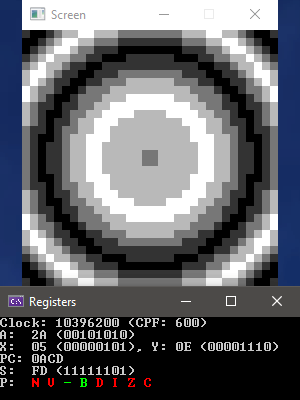

Эмулятор MOS-6502 |
|

Пример вывода одной из программ Ниже информация о регистрах ВступлениеОтносительно старый проект, начатый еще в конце февраля 2023 года. Это эмулятор процессора MOS-6502, написанный на C# с нуля, используя только документацию по инструкциям и список аппаратных ошибок. За 2 недели удалось добиться идеальной работы практически всех программ с этого сайта. Но, несколько из них работали некорректно, и у меня никак не получалось сузить круг поиска, как и найти источник ошибки. В конечном итоге я занялся переводом программы на нормальный вывод изображения, без использования меееедленной консольной псевдографики, поисками идеальной графической библиотеки под C#, переписыванием всей архитектуры и прочей фигней, главное, что не поиском ошибки. В начале лета все действо окончательно и бесповоротно заглохло. А ведь, по сути, оставалось только найти одну маленькую ошибку и дописать обработку длительности выполнения опкодов (В 6502 они жестко фиксированы, и, например, видеоконтроллер Apple II целиком опирается на эту особенность).ИспользованиеДанный процессор достаточно сильно повлиял на всю компьютерную историю, и, к примеру, стоял в Commodore PET, Commodore 64, Apple I, Apple II, Atari 2600, Nintendo NES, Советском АГАТ, Правец 8 и в бесчисленном количестве других устройств, ибо очень дешево (ОЗУ тех ПК обычно стоила в раза 3 дороже) и относительно быстро. В СССР, конечно, большее распространение получил Z80, стоявший в каждом клоне Spectrum и в большинстве тамошних принтеров (В том числе в моем Robotron K6312M из ГДР), и производившийся на целой армии заводов по всей восточной европе и территории СССР.Из интересных фактов можно подметить то, что мозги T800 из Терминатора, вероятно, работают на какой-то вариации 6502, судя по "виду от первого лица". Помимо этого, робот Бендер из Футурамы также основан на этом сорте калькуляторов, что показывается в одном из выпусков. ПослесловиеСкачать исходник и EXE можно тут. Архитектура изначально была неправильная, как и выбор языка. Сам по себе C# не слишком быстр для таких целей, а если обернуть критические части в switch и таблицу делегатов, то такая идея, ясное дело, ничем хорошим не кончится. На моем ПК (AMD Ryzen 5 2600) в отладочной конфигурации выходит ~5 миллионов операций в секунду (В релизе вплоть до 50), настоящие же работали в основном на 1ом-3х МГц, что при желании можно пересчитать в операции. SFML был прикручен в последнии дни +- нормальной разработки и не до конца, поэтому весь ввод через консоль, а само окно SFML в некоторых сценариях лишается цикла обработки сообщений, что приводит к его зависанию. Эта версия содержит лишь небольшие исправления в Program.cs, остальной код остался еще с весны.Из интересных статьей я могу порекомендовать википедию (Английский), Habr раз, два, а так же этот сайт. |